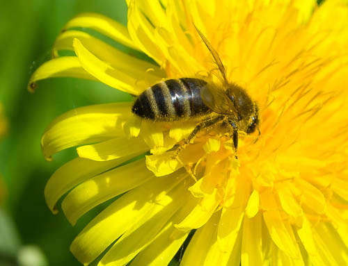
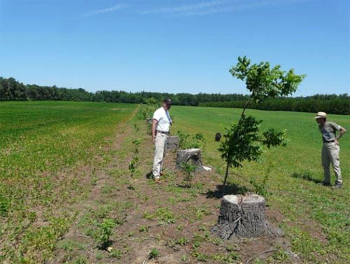

Habitat and Food
Ensuring wild pollinators have access to both nesting habitats and additional food resources when the crop is not in bloom can go hand-in-hand - in fact, it may be as simple as reducing disturbances to field edges or unproductive areas on the farm.
Many of Ontario's wild solitary bees are ground-nesting species. They require well-drained, structured soil with low-density vegetation. South-facing slopes are usually preferred. The nests can occur in field margins and in the cultivated area itself (where they are easily destroyed by deep tillage). Others nest in cavities between stones, in wood, hollow twigs or stems, and similar protected spaces. Bumble bees use larger natural cavities for their colonies, such as abandoned rodent burrows and other sheltered spaces. Fly pollinators nest in an even greater variety of habitats.

A ground nesting bee (photo by Nick Richter)

Larva of a twig nesting carpenter bee (photo by S. Marshall)
Wild pollinators do not forage as far as honey bees, so crops more than about 75m from suitable nesting sites are unlikely to be visited by these insects.
Habitat for wild pollinators should provide food resources before and after the crop is in bloom. Pollinators need to forage on plants for the entire season to produce the next generation of pollinators. A varied diet is good for all pollinators, so that they can obtain the full spectrum of nutrients needed for growth and reproduction. In the past, it was common practice to apply herbicide to or mow non-crop plants both from the field and at its margins. While competing flowers can be a distraction if they are more attractive to bees than the crop’s blooms, removal of competing plants is no longer considered as necessary as it once was. For example, OMAFRA no longer recommends frequent mowing of competing dandelions in tree fruit orchards. Research has shown that tree fruit pollen is more attractive than dandelion pollen. Even if some bees forage on the dandelion, it will not affect pollination of the tree fruit to a point where control is economically justified.

A Halictidae bee on a wild flower, daisy fleabane (photo by Tom Woodcock)

Bee foraging on dandelion (photo by George Hodan)
Agricultural areas that can be conserved as wild pollinator habitat include field edges, hedgerows, and areas of low productivity (e.g., areas of perpetually dry or wet soils, corners difficult to access with machinery). Research in crops such as canola and watermelon has shown that setting aside a portion of each hectare of land as pollinator habitat can increase the net profitability of that hectare.
All that is required is to reduce or avoid activities such as tillage, mowing, or spraying in these areas. Large fields can also benefit from leaving patches as mini "bee pastures" that are permanently given over to vegetation and have minimal disturbance. These patches can easily be integrated with activities such as drainage and erosion control, or windbreak improvement.

An unsprayed field edge that is rich with pollinator resources

Floral diversity at a field edge

Creation of a pollinator hedgerow in Norfolk County, Ontario
(photo courtesy of Alternative Land Use Services)
Growers may in fact realize an economic benefit by "retiring" less productive or difficult land (e.g., former wetlands) and using it instead to provide forage and habitat for pollinators that benefit their crop. Again, this practice can be incorporated into other projects, including flood control and water management, erosion control, and creating habitat for other wildlife. Some of this alternative forage may compete for pollinators during crop bloom, but the availability of resources outside of the crop bloom period is good for both managed and wild pollinators.
There are organizations and government programs that will assist growers with establishing conservation projects on their farm, and may even provide financial assistance. For example, Alternative Land Use Services (ALUS) is a grower-managed organization that encourages and provides funding and information for on-farm conservation projects, including pollination conservatio. The Canada-Ontario Environmental Farm Plan (EFP) also provides funding for on-farm pollinator conservation activities on a cost share basis. The program varies from year to year; current information is available on the Ontario Soil and Crop Improvement Association website.
In addition to other potential benefits, increasing the area of marginal land dedicated to conservation will increase wild pollinator populations, and the services they provide to crops. This, in turn, can lead to increased profitability, as costs associated with cropping marginal land are also reduced.

Download a list of sample off-bloom resources for pollinators.
The Ontario Horticultural Association has also produced a useful guide to creating a pollinator patch, including a list of garden centres in Ontario that supply native plants. See More Information for links.